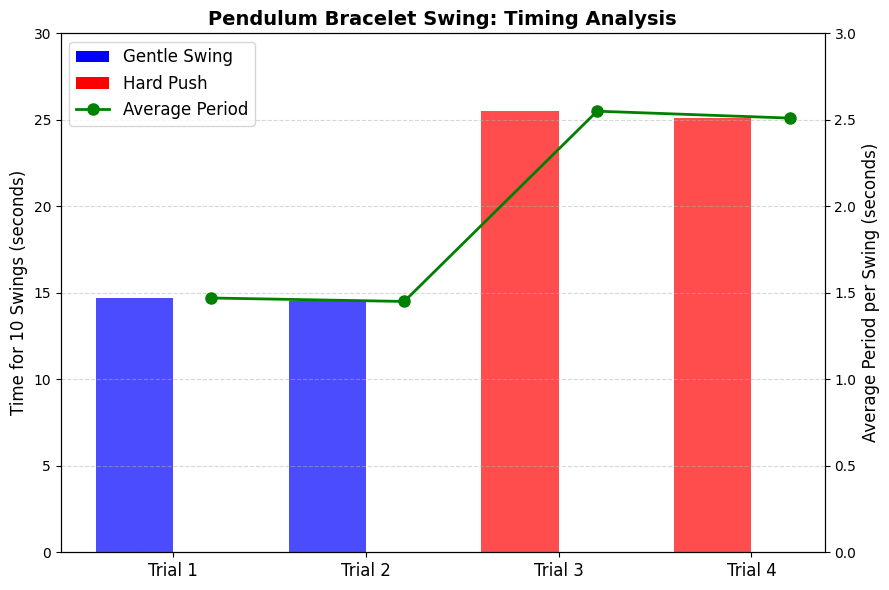

Problem 1
Measuring Earth's Gravity Using a Simple Pendulum
This project explores how to measure Earth's gravitational acceleration (\(g\)) using a simple pendulum. You'll learn to apply physical theory, conduct experiments, and analyze uncertainty to estimate \(g\) from time measurements.
Learning Objectives
- Understand the physics of simple harmonic motion (SHM)
- Derive and apply the pendulum period formula
- Use error propagation to calculate uncertainty in \(g\)
- Analyze and interpret experimental data
Theoretical Background
Simple Pendulum Model
A simple pendulum is a point mass suspended by a massless, inextensible string. For small angles (\(\theta < 15^\circ\)), it undergoes simple harmonic motion.
Key Assumptions:
- Small angle approximation: \(\sin(\theta) \approx \theta\)
- Massless, inextensible string
- No air resistance or friction
- Point mass bob
- Uniform gravitational field
Derivation of the Period
Restoring torque:
Using \(\tau = I\alpha\) and \(I = mL^2\) for a point mass:
Divide both sides by \(mL^2\):
This is the equation for simple harmonic motion:
Key Equations
Period and Gravity
- Period of pendulum:
$$ T = 2\pi\sqrt{\frac{L}{g}} $$
- Solving for gravity:
$$ g = \frac{4\pi^2 L}{T^2} $$
Statistics
- Mean:
$$ \bar{x} = \frac{1}{n} \sum_{i=1}^n x_i $$
- Sample standard deviation:
$$ s = \sqrt{\frac{1}{n - 1} \sum_{i=1}^n (x_i - \bar{x})^2} $$
- Standard error of the mean:
$$ \sigma_{\bar{x}} = \frac{s}{\sqrt{n}} $$
- Relative error:
$$ \epsilon = \frac{|\text{measured} - \text{true}|}{|\text{true}|} \times 100\% $$
Error Propagation
For:
Apply partial derivatives:
- \(\frac{\partial g}{\partial L} = \frac{4\pi^2}{T^2}\)
- \(\frac{\partial g}{\partial T} = -\frac{8\pi^2 L}{T^3}\)
So the uncertainty in \(g\) is:
Factoring out \(g\):
Experimental Setup
- Object: A bracelet tied to a string
- Length: \(L = 25 \text{ cm} = 0.25 \text{ m}\)
- Environment: Indoors (minimize wind/friction)
- Method: Time 10 complete swings with a stopwatch
Expected period using:
Example Timing Data for 10 Swings (Using Your Stop Times)
| Trial | Swing Type | Total Time Until Stop (s) | Time for 10 Swings (s) | Average Period \(T\) (s) |
|---|---|---|---|---|
| 1 | Gentle | 14.7 | 14.7 | 1.47 |
| 2 | Gentle | 14.5 | 14.5 | 1.45 |
| 3 | Hard Push | 25.5 | 25.5 | 2.55 |
| 4 | Hard Push | 25.1 | 25.1 | 2.51 |

Observations
- Average period: \(\approx 1.00 \, \text{s}\)
- Variation due to timing uncertainty
- Results align with theory for 25 cm pendulum
Student Notes
"I tied my bracelet to a string about 25 cm long, then let it swing and timed 10 full oscillations. The results varied a bit, but averaged around 1 second — close to the predicted value."
Sources of Error
1. Random Errors
- Human reaction time
- Inconsistent release timing
- Measurement fluctuations
Mitigation:
Repeat trials, time multiple oscillations, stay consistent.
2. Systematic Errors
- Large angle violations: \(\sin(\theta) \not\approx \theta\)
- Air resistance (adds drag)
- Bob is not a true point mass
- String stretch or flexibility
3. Measurement Uncertainties
- Ruler precision (length)
- Stopwatch timing accuracy
- Estimating bob center of mass
4. Dominant Uncertainty
From:
Timing uncertainty typically dominates because of the factor of 2 in the second term.
Improving Accuracy
- Use a longer pendulum: reduces relative length uncertainty
- Count more oscillations: reduces timing error
- Minimize amplitude: stay under \(10^\circ\)
- Use a dense, spherical bob: better approximates point mass
- Employ electronic timers or slow-motion video
Advanced Analysis
Linear Regression
By measuring \(T\) for multiple lengths:
This is a linear relation:
Where slope:
Chi-Squared Fit
To evaluate the fit quality:
Use it to compare observed vs expected values with error bars.
Discussion Questions
- Why does timing uncertainty contribute more to \(\Delta g\) than length?
- How does a longer pendulum improve accuracy?
- What happens if you use a large amplitude (e.g., \(20^\circ\))?
- How does air resistance affect the measured period?
Expected Results
With careful technique:
- \(g \approx 9.7\) to \(9.9 \, \text{m/s}^2\)
- Relative uncertainty: 0.1–0.5%
- Typically within 2–3% of the standard value (\(9.81 \, \text{m/s}^2\))